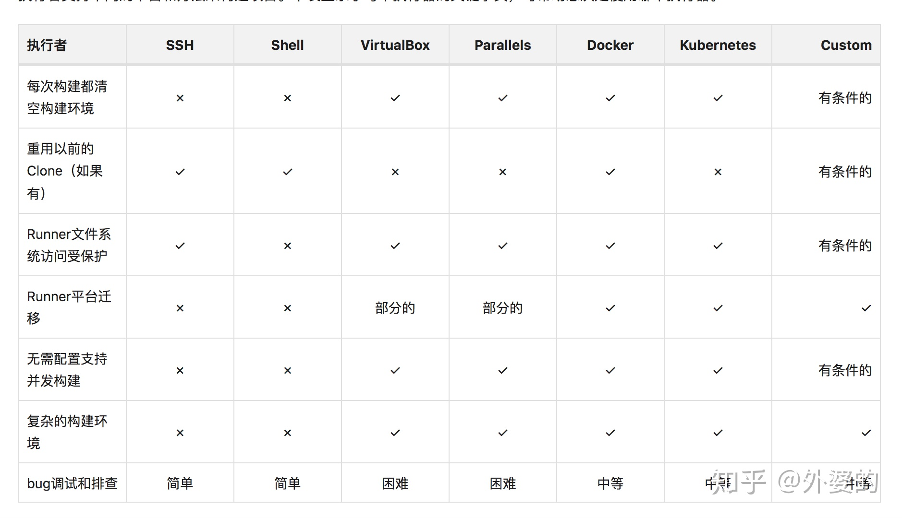

CI 与 CD 介绍
前言
本人平时学习及收集内容，欢迎参入一起讨论。
内容
- 概念
- Jenkins 使用
- gitlab CI/CD 使用
- jenkins与Gitlab-CI的区别
一、概念
- CI 持续集成
- CD 持续交付
- CD 持续部署
1.1 CI 持续集成
开发者尽量时时刻刻合并开发分支至主干分支。避免走到发布日才开始合并，掉入集成地狱。无论何时新分支集成至项目，持续集成可以自动化测试持续难应用是否正常。
1.2 CD 持续交付
持续将会是持续集成的扩展，可以保证稳定的发布产品新特性。这意味着基于自动化测试，你可以也可以一键自动化发布。理论上，持续将会可以决定是按天，按周，按双周发布产品。如果确实希望能够享受特拉维夫交付的好处，那么应该尽快发布到新产品中。一旦出现问题时能尽早早排除。
1.3 CD 持续部署
持续部署是持续交付的下一步。通过这一步，每个新特性都自动的部署到产品中。但是如果出现未通过的测试用例将会终止自动部署。持续部署可以加速用户反馈新特性，避免发布日带来的压力。开发可以着力于开发系统，开发结束后几分钟就可以触达到用户。
参考资料
二、Jenkins 使用
三、Gitlab CI/CD 使用
- 什么是GitLab CI/CD
- GitLab CI/CD 接入流程
3.1 什么是GitLab CI/CD
GitLab CI/CD就是提交代码到GitLab 后，满足指定条件后会触发pipeline进行自动化构建、发布。
pipeline可以理解为构建任务，里面可以包含多个流程，如下载依赖、运行测试、编译、部署。pipeline 什么时候触发，分为几个流程，每个流程做什么，是在项目的 .gitlab-ci.yml 文件中定义。如图所示：

3.2 GitLab CI/CD 接入流程
GitLab CI/CD 的 pipeline 具体流程和操作在 .gitlab-ci.yml 文件中申明，触发 pipeline 后，由 GitLab Runner 根据 .gitlab-ci.yml 文件运行，运行结束后将返回至 GitLab 系统。
gitlab-ci.yml 文件
gitlab-ci.yml 文件是一个申明式文件，用于定义 GitLab CI/CD 流程分为几个阶段，每个阶段分别干什么。
yml文件基本语法规则
image: node
# 定义相关变量
variables:
COPY_PATH: /frontEnd/$CI_PROJECT_NAME #从docker拷贝到宿主机器的目录，勿动
NODE_MODULES_PATH: /frontEnd/$CI_PROJECT_NAME/$CI_COMMIT_REF_NAME/node_modules
Mobile: "15767668950" #项目开发者的手机号，在企业微信中使用的，用来流程报错后@开发者
# 定义 stages
stages:
- build
- test
# 定义 job
build 阶段:
stage: build
script:
- echo "build stage"
# 定义 job
发布到测试环境:
stage: test
script:
- echo "test stage"
2
3
4
5
6
7
8
9
10
11
12
13
14
15
16
17
18
19
20
21
22
image是执行CI/CD依赖的Docker基础镜像。镜像中有Node、Yarn、Dalp（内部rsync工具）。stages中定义了我们的pipeline分为以下几个过程：
- 下载依赖阶段
pre_build - 构建阶段
build - 发布阶段
deploy
stage申明当前的阶段，在stages中使用variables用于定义变量before_script执行script前的操作script当前stage需要执行的操作changes指定stage触发的分支only指定当前job仅仅只在某些tag或branch上触发cache定义全局的缓存策略
GitLab Runner
GitLab Runner 是CI的执行环境，负责执行 gitlab-ci.yml 文件，并将结果返回给 GitLab 系统。 Runner 具体可以分为两种Specific Runner和Shared Runner形式， docker 、虚拟机或shell，在注册 runner 时选定方式。
- Shared Runner是Gitlab平台提供的免费使用的runner程序，它由Google云平台提供支持，每个开发团队有十几个。对于公共开源项目是免费使用的，如果是私人项目则有每月2000分钟的CI时间上限。
- Specific Runner是我们自定义的，在自己选择的机器上运行的runner程序，gitlab给我们提供了一个叫gitlab-runner的命令行软件，只要在对应机器上下载安装这个软件，并且运行gitlab-runner register命令，然后输入从gitlab-ci交互界面获取的token进行注册, 就可以在自己的机器上远程运行pipeline程序了。
Shared Runner 和 Specific Runner的区别
- Shared Runner是所有项目都可以使用的，而Specific Runner只能针对特定项目运行
- Shared Runner默认基于docker运行，没有提前装配的执行pipeline的环境，例如node等。而Specific Runner你可以自由选择平台，可以是各种类型的机器，如Linux/Windows等，并在上面装配必需的运行环境，当然也可以选择Docker/K8s等
- 私人项目使用Shared Runner受运行时间的限制，而Specific Runner的使用则是完全自由的。
Executor
上面说过 Specific Runner是在我们自己选择的平台上执行的，这个平台就是我们现在说到的“Executor”，我们在特定机器上通过gitlab-runner这个命令行软件注册runner的时候，命令行就会提示我们输入相应的平台类型。可供选择的平台一共有如下几种，下面是一张它们各方面特点的比较表格

四、jenkins与Gitlab-CI的区别
- gitlab-runner配置简单，很容易与gitlab集成。当新建一个项目的时候，不需要配置webhook回调地址，也不需要同时在jenkins新建这个项目的编译配置，只需在工程中配置gitlab-ci.yml文件，就可以让这个工程可以进行编译。
- gitlab-runner没有web页面，但编译的过程直接就在gitlab中可以看到，不需要像jenkins进入web控制台查看编译过程。
- gitlab-runner仅仅是提供了一个编译的环境而已，全部的编译都通过shell脚本命令进行。当然，jenkins也可以是全部的编译都通过shell脚本命令进行。
- jenkins的好处就是编译服务和代码仓库分离，而且编译配置文件不需要在工程中配置，如果团队有开发、测试、配置管理员、运维、实施等完整的人员配置，那就采用jenkins，这样职责分明。不仅仅如此，jenkins依靠它丰富的插件，可以配置很多gitlab-ci不存在的功能，比如说看编译状况统计等。
参考资料
- 前端部署发展史
- 基于 GitLab CI/CD 的自动化构建、发布实践
- 基于 GitLab CI 的前端工程 CI/CD 实践
- GitLab CI/CD 在 Node.js 项目中的实践
- Node+GitLab 实现小程序 CI 系统
- Gitlab-ci:从零开始的前端自动化部署
- 微信小程序工程化之持续集成方案
- 让自动化工作流解放你的双手
- 使用阿里云 OSS 与 github actions 自动托管个人网站
- 持续集成利器，GitHub Actions
- Jenkins 实现前端自动打包,自动部署代码及邮件提醒功能
- 【第 1139 期】基于 Gitlab CI 搭建持续集成环境
- 【第 923 期】基于 Git、Svn 的 Commit 实现可增量构建的前端持续集成解决方案
- 网易云音乐前端模块动态下发系统
- 用 travis 和 git hook 搞个一键部署
- Travis-CI 自动化测试并部署至自己的 CentOS 服务器
- 用 Travis CI 打造大前端持续集成和自动化部署
- Github + Jenkins + Docker 实现自动化部署
- 抛弃 jenkins，使用 node 从零搭建自动化部署管理平台
- 《大前端进阶 Node.js》系列 P6 必备脚手架/CI 构建能力（上）
- 《大前端进阶 Node.js》系列 P6 必备脚手架/CI 构建能力（下）
- 记录一次 docker+jenkins+gitlab 搭建内网开发环境
- docker + webhook 从零实现前端自动化部署
- 知乎部署系统演进
联系作者
平凡世界，贵在坚持。